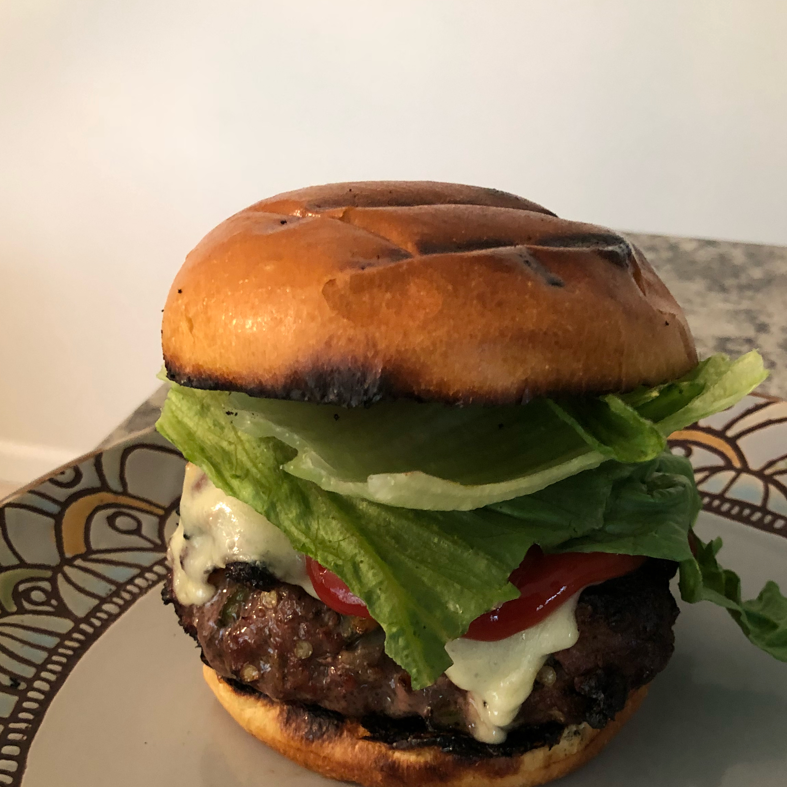

Burger Recipe

Description
A huge single or triple burger with all the fixings, cheese, lettuce, tomato, onions and special sauce or mayonnaise!
Ingredients
- Halapeno Peppers
- 4 Pounds Ground Beef
- Salt and Pepper
- 1 egg
- 8 Hamburger Buns
Steps
- Preheat a grill for high heat. When the grill is hot, roast the jalapeno peppers until
blackened on all sides. Place in a plastic bag to sweat and loosen the blackened skin.
Rub the skin off, then seed if desired, and chop.
- In a large bowl, use your hands to mix together the chopped jalapenos, ground beef,
salt, pepper, egg, steak sauce, onion, hot pepper sauce, oregano, Worcestershire
sauce, garlic salt and Fritos®. Divide into 8 balls, and flatten into patties.
- Grill patties for 10 to 15 minutes, turning once, or until well done. I always drink one
beer, then flip, drink another beer, then remove from the grill and place on buns.
Top each one with a slice of pepperjack cheese and pig out!